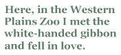

Alan Gould’s collected poems span a lot of one man’s writing life. The first adjective that sprang to mind as I dived in was ‘daunting’. Not because the language is impenetrable or the poetry inimical, but because there is so much of it — not far short of three hundred pages. I was afraid of the sheer volume of it.
I began at the beginning, as you do, where he claims the Icelandic half of himself — his mother’s legacy, and I was a bit overawed by the intensity of the poetics, the influence of kennings and journeys. I pushed my metaphorical boat out into the poetic stream and paddled warily, making landfall now and again and doing a sort of artless reconnaissance — could I settle here? Or here?
Alas, I could not. I found poetry of place and landscape but it wouldn’t let me in. I was confronted time and again with words I knew in an order not entirely strange, but with a peculiar grammar that made me feel first cross and then stupid. An example, from ‘Trees, 1973’:
Dusk makes along my local hill, the sun has worked in under and
the nation of drab trees is tortile and bullion country.
There seem to be words missing and I found myself wanting to check with the manuscript. There may be a line-break after ‘and’ but I’m not sure. The indentation on the second line may have been imposed by the printer’s having come up against the right-hand margin on the line above, or maybe it’s part of the construction. The later stanzas seem to confirm the latter as a couple of lines break and indent twice…
Suddenly I wondered why I was sweating this point rather than listening to the poem and trying to come to terms with the trees. Fearing myself to be at fault, I pushed off quietly and drifted downstream, smiling a little at the discovery of a glimmer of formalism in the pleasing half-rhyme in ‘Heir Apparent’, while conscious of a layer of meaning that still eludes me. I drifted into the second group of poems ‘Astral Sea’ where I spied the name ‘Gudrid Thorbjornsdota woman I know from another poet’s work. I headed for it greedily, then realised that I was searching for landmarks rather than reading poems.
So I left the boat and dived in, sink-or-swim. I did a lot of treading water, looking up references, seeking the importance of things. I noted the growing attention to and facility with, form. I waded ashore at the end of the selection from ‘Mermaid’, wherein the poet has become wholly Australian, urban, academic and, from my point of view, far more accessible. Here, in the Western Plains Zoo I met the white-handed gibbon and fell in love. Here she is.
At first the apparent anthropomorphism draws the lips of the sophisticated reader into a moue of distaste, but this relaxes into a grin as the monkey becomes a poem which goes gaily through its paces, showing what words can do as it swings dangerously across the line-endings, holding rhymes like snatched fruit, dropping them innocently into unexpected places. Enjambment indeed!
The White Handed Gibbon at Western Plains Zoo
Has power shoulders, swingingly is
a ms at her workout. Gung-ho she knows
her one rope’s slope, this cable-twist
of biceps. Her leaps are stressed
in brisk, non-risk, iambic arcs,
her jaunt all flaunt, all blissful reflex,
About her body’s interface
with surfaces, she’s serious,
Lawrentian, vitalist, so post-modernist,
in her russet tracksuit’s satin sheen,
our high-achiever belle cousine,
and has been since the Eocene,
working the air’s universal joints
arm over arm in taut s-bends,
airy double clefs and ampersands.
With her talcum face and small white hands
one looks for the handbag flying behind
this aerobic ms, now in her snappy brown blouse
as she vaults the shoppers to catch her bus,
with scarcely a glance for shuffling us,
and arrives, as though for her seminar,
to sit composed on the edge of a chair,
hands on knees and elbows in,
body-work over, biros poised to begin.
This life of the mind, eh girls. Ho hum,
shall I kick off? Cogito ergo sum.
I read and re-read this poem aloud, delighting in internal rhymes and assonances, unashamed alliteration and all that sheer bloody craftsmanship pretending to be accidental:
About her body’s interface
with surfaces, she’s serious,
Lawrentian, vitalist, so post-modernist…
And see the poet grab shapes and concepts from all over the place, like a naughty monkey — universal joints and s-bends from engineering and plumbing, music’s clefs and printing’s ampersands. Delicious.
The last poem from ‘Mermaid’ is a concrete form, which I usually distrust, but this one is especially interesting because it is the second one from the collection. The first makes big curves that sweep the facing pages in the form of a Mermaid’s tail as he describes the glorious baroque landscape of the undersea world which informs the thoughts of a man diving with a woman. This last makes smaller undulations as a cat disappears into a hedge. He has come to understand something fundamental about cats. The collection has moved from the sublime, not to the ridiculous but to the simple. And the next few poems, from Dalliance and Scorn, stay there. ‘Anne’s Cats’ suggests where his newfound wisdom about the layered nature of the feline has its origins. Here, more cheeky slant and half rhymes — ice/police, temper/jumper, girl/oil — give a laid-back, self-forgiving ease to the diction that mirrors the poet’s comfort with his current situation.
The next few poems are snippets of domesticity, delighting in various unremarkable aspects of his ‘honey’. In ‘Rendezvous’ she’s at the sales, claiming a dress she has coveted and the poet, poised to sneer, is waylaid by the beauty in her small feminine triumph. The bubbling soft consonants at the end of the lines — falls, pools, sales — ripple like the colours of the dress his honey bears happily home, ‘insouciant and marvellous’. I like her even more when his beloved ‘stickybeak’ walks the night peering into neighbours’ windows, bent on uncovering the suburb’s mysteries, wherein he sees her as ‘foremost of its rarities’. There is a touch of Herrick in his bemused masculine praise and I love it.
At this point so many of the things he sees have an aching sweetness that he is not ashamed to show. Music has become magic and he tells in ‘Combo’ of the violinist who ‘finds the slaloms of the air/ and skids down Time’s quick everywhere, / unravels, wavery and frail, /the rapture of his inward smile.’ For some reason I love the fact that his music ‘skids’ rather than ‘slides’.
And what can I say about ‘The Dalliance Razzamatazz,’ where he and his honey wander into the purlieu of an ‘ …oozy, boozy sax as/it solo’d round a dance-room floor, /baritone and smoky-lax as/it gave its cool memento mori/to the lovers…’?
The Dalliance Razzamatazz
Once on a champagne, fairground night
we both went ambling through the plazas
and heard the jazzman’s trumpet ease,
and squeeze one slim elastic note
slowly through its un-oiled door,
and caught the oozy, boozy sax as
it solo’d round a dance-room floor,
baritone and smoky-lax as
it gave its cool memento mori
to the lovers at their movements
that joy comes always incognito
joy is swish, is hunky dory,
this is the dalliance razzamatazz
that joy will suffer no improvements
joy is stylish and is not so.
this is the dalliance rigadoon,
I was rhetorical, you were a tease.
I said, I’ll put that topaz moon
under your ear like a briolette,
and spread those billion billion stars
like little gismos in your hair.
You laughed, you told me I should look
at my big round moon with closer care
for here was no half-precious stone,
but a white-faced, puffy, balding bloke
playing a silver clarinet
and all my conversation was
nothing but his kissy jazz
nothing but kissable, ludicrous air
blowing our heydays off the planet.
The message in that memento mori is that ‘joy comes always incognito’. And the two of them dispute reality and romance under the influence of all the ‘kissy jazz’ blown in ‘kissable, ludicrous air’. I love this poem most of all.
There — three consecutive paragraphs with the word ‘love’ in them. As I was once fond of telling my students, there is a heady pleasure to be found in realising what one means by reading what one has written. Love it is, then.
Alan Gould is a poet who writes from where his heart is at the moment. He titles his collection The Past Completes Me from an early series celebrating the colonial clippers, their brushes with history, their eye-witness passengers and (sometimes especially) relevant crew; things important in his own past and poems true to the time of their making. In the last collection represented in the book he returns to merchant ships and, finally, to Iceland. It pleases me to think that the little cluster of poems that spoke to me, a jewel in the timeline of his poetry, celebrates a point in it where he is completed by something else entirely.